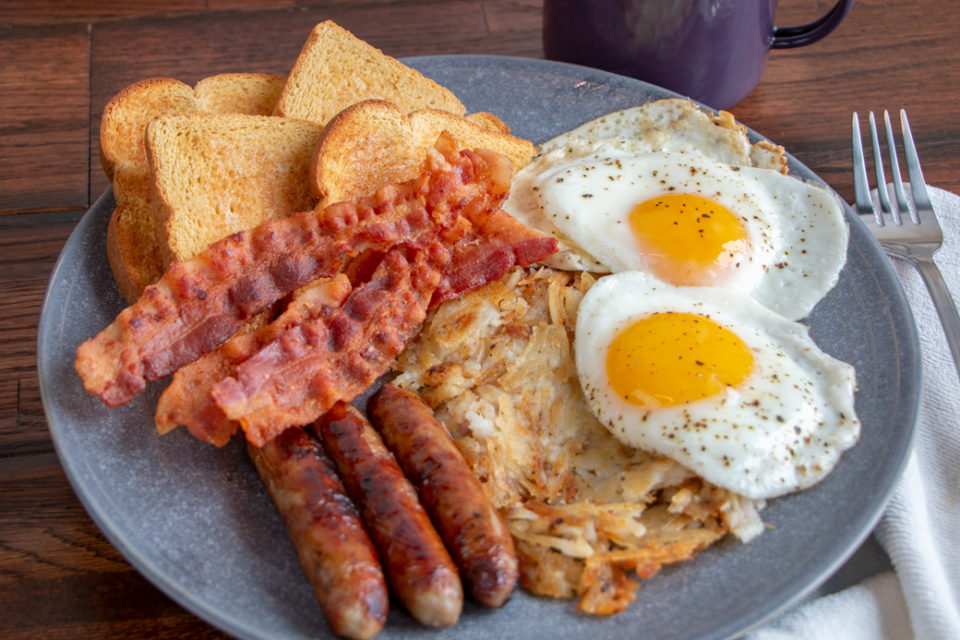

The Breakfast Sampler

Description
A delicious sampling of a little bit of every of the most common breakfast items that anyone could enjoy. This plates serves 2!
Ingredients
- 4 slices of whole wheat potato bread and/or 2 buttermilk pancakes
- 4 slices of bacon
- 4 breakfast sausage links
- 2 tablespoons of butter
- 1 1/2 cups frozen hash browns
- Salt and pepper, to taste
- 4 eggs
Instructions
- In a skillet over medium-low heat, pan fry bacon and sausage until browned and fully cooked. For bacon: about 3 minutes per side. For sausage: About 12-16 minutes total. Set aside.
- Meanwhile, heat butter or cooking oil in a separate nonstick skillet over medium-high heat and cook has browns according to package instructions, or until browned and hot, about 5-7 minutes. Season with salt; set aside.
- Once bacon and sausage have finished cooking, drain most of the grease, then crack eggs into the same skillet and cook on medium until the whites have set, about 1-2 minutes. Season with salt and pepper, to taste.
- Meanwhile, place whole wheat potato bread in toaster until it reaches desired color.
- When eggs are finished, serve on a plate with hash browns, 2 slices of bacon, 2 sausage links, and 2 slices of toast.